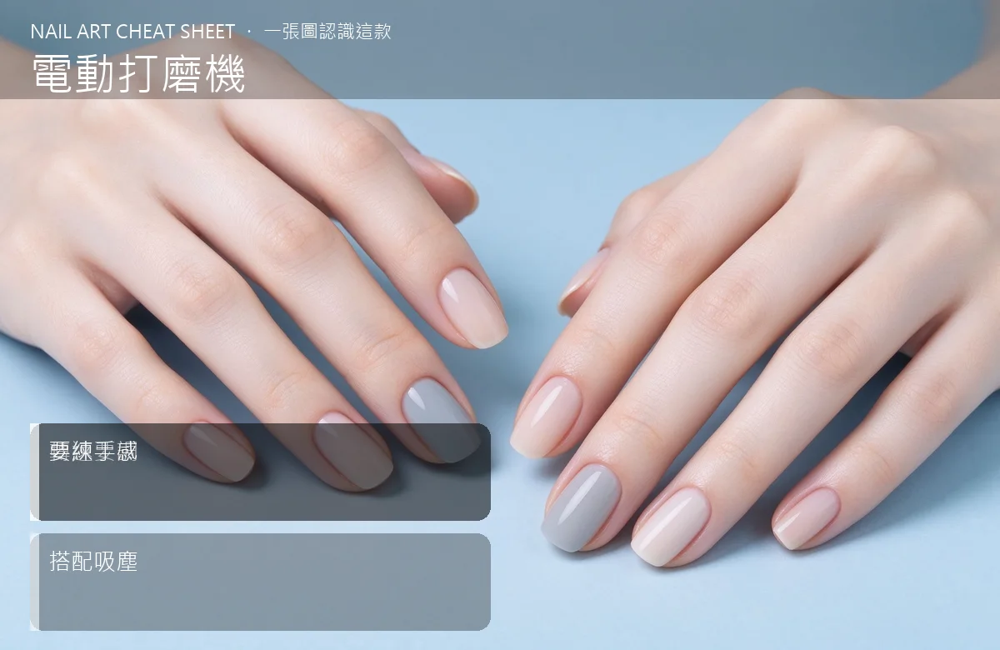

美甲電動打磨機是什麼？進階入門攻略
電動打磨機是沙龍效率神器，卸甲、磨水晶只要 5 分鐘，但要練手感才不會磨到真甲。
電動打磨機原理與辨識重點：美甲師不說的轉速要調
電動打磨機（E-file）是一支可調轉速的電動筆，換不同頭（磨頭）就能修型、卸甲、推甘皮。它取代手動銼刀，速度快十倍，但壓力要輕、角度要對，否則一下就磨到真甲發熱。
誰適合做電動打磨機？專業卸甲對號入座
沙龍等級美甲師必備；在家自己做、常做延長的人可以進階購買。新手不要一開始就買。
電動打磨機美甲施作步驟：電動磨甲機
先練低轉速（10000 rpm 以下）→ 從磨水晶廢邊開始 → 磨頭輕貼甲面、不要壓下去 → 感覺發熱就停一下 → 熟練再漸漸提高轉速。
電動打磨機優缺點分析：美甲持久度與傷甲評估
| 優點 | 說明 |
|---|---|
| 效率高、卸甲 5–10 分鐘搞定、修型精準，專業感直接拉滿。 | 是歐美流派的招牌，進階就能上手 |
| 缺點 | 說明 |
| 要花時間練手感，新手容易磨到真甲痛；機器＋磨頭投資 5000–15000 元。 | 前置與別一開機就用高轉速（20000 rpm 以上），一下子就磨到甲床、客人會痛到縮手。也別壓下去磨，靠機器自己轉就好。沒顧好會打折 |

電動打磨機新手雷區：要練手感與常見錯誤
注意：別一開機就用高轉速（20000 rpm 以上），一下子就磨到甲床、客人會痛到縮手。也別壓下去磨，靠機器自己轉就好。
電動打磨機和其他美甲做法的差別比較
電動打磨機跟「一般電動指甲機」（消費品那種磨老廢甲）不同。E-file 是專業款，轉速可調、可換磨頭；消費品那種只有單一轉速，不能拿來卸凝膠。
電動打磨機美甲常見問題 FAQ
Q：一台 E-file 多少錢合理？ A：入門款 3000–5000 元，沙龍常用款 8000–15000 元，頂級日貨 20000 元以上。新手選 5000 元左右的就好。
Q：磨頭要買幾支？ A：起手 3–4 支：卸甲用粗砂磨頭、修型用細砂磨頭、推甘皮用錐頭。其他造型用得到再補。
Q：會不會震到手麻？ A：便宜機器震動大、用久手會麻。選有減震設計的機種，做一天下來比較不會手痛。